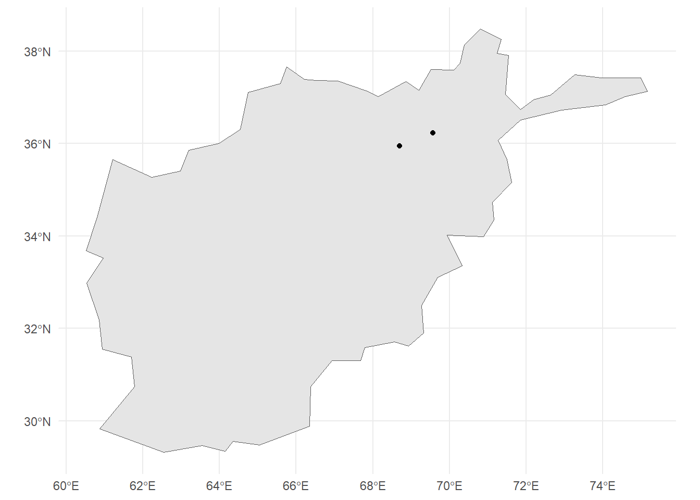

# for scraping
library(rvest)
library(dplyr)
library(purrr)
library(parzer)
# to parse it to spatial data
library(sf)
library(rnaturalearth)
library(ggplot2)Every now and then, we want to get some data from the wild – e.g., from Wikipedia articles. We’ll see two data types here:
- tables
- specific data from a specific class.
Before we start, let’s load the necessary libraries.
Scraping multiple tables
Let’s start with a simple table to scrape. Here, you see the URL that we’re working with. If you check it out, you can see that we’ve got multiple tables in here. Our aim is to collect them all into a single table.
url <- "https://en.wikipedia.org/wiki/List_of_NATO_installations_in_Afghanistan"So, let’s start by reading in the table. We’ll discard everything that isn’t a table (i.e. just one column). In this specific format, we’ll also get the name of each table, since that seems to contain information.
tables <- url %>%
read_html() |>
html_table() |>
keep(~ncol(.x) > 1)
table_names <- tables |>
map(~names(.x) |> unique()) |>
unlist() |>
discard(~.x == "")The problem with our data so far is that the actual variable names are in the first row of our data.frames. So let’s write a function to get the variable names from the first row.
make_first_row_to_col_names <- function(data){
col_names <- data[1,] |> as.character()
data[-1, ] |>
setNames(col_names)
}Now that we’ve written this function, we can bring everything together:
- the tables
- with their correct variable names and
- their table origin
We’ll use the map2 function here, since we’re basically looping over two lists:
- tables
- table origin
The ~ indicates that we’re creating a function on the fly here, where we’re taking each table, correcting their variable names and adding the table origin. We’ll them bring them all into one table.
tables_merged <- map2(tables,
table_names,
~ .x |> make_first_row_to_col_names() |> mutate(origin = .y)) |>
plyr::rbind.fill()
tables_merged |>
head() Type Name District Opened Closed
1 Camp HKIA/KAIA(Hamid Karzai Int'l Airport) Kabul District 2005
2 Camp Alamo Kabul District
3 Camp Bala Hissar Kabul District
4 Camp Black Horse Kabul District 2008
5 Camp Dogan Kabul District 2002 Feb 2015
6 Camp Dubs Kabul District
Forces
1 ISAF Headquarters ISAF Joint Command Turkish Army US Army USMC US Air Force Australian Army British Army Canadian Army Mongolian Armed Forces
2 US Army Australian Army
3 US Army
4 US Army Canadian Army
5 Turkish Army
6
Notes
1 ISAF HeadquartersISAF Joint Command HeadquartersHeadquarters for RC-Capital[citation needed]
2 NATO Training Mission. Soldiers and Contractors.
3 [6]
4 [7]
5 [8]
6 [9]
origin NA
1 Kabul Province Installations NA
2 Kabul Province Installations NA
3 Kabul Province Installations NA
4 Kabul Province Installations NA
5 Kabul Province Installations NA
6 Kabul Province Installations NAScraping coordinates
Sometimes, we want to get very specific data from a web page. In this case, we want to get coordinates from Wikipedia district websites. Let’s check out the two districts and their Wikipedia sites.
district_urls <- tibble::tribble(~ district, ~ url,
"Guzargahi-Nur", "https://en.wikipedia.org/wiki/Guzargahi_Nur_District",
"Puli-Khumri", "https://en.wikipedia.org/wiki/Puli_Khumri")
district_urls# A tibble: 2 × 2
district url
<chr> <chr>
1 Guzargahi-Nur https://en.wikipedia.org/wiki/Guzargahi_Nur_District
2 Puli-Khumri https://en.wikipedia.org/wiki/Puli_Khumri By checking these websites out, we’ve already found out that we’re searching for the class geo-dms. This is something we can search for with html_element. Let’s make a function that will scrape the coordinates from these URLs using this class.
get_coordinates_from_url <- function(wikipedia_url) {
wikipedia_url |>
read_html() |>
html_element(".geo-dms") |>
html_text()
}Then, we can use this function on our district_urls data.set to create a new character variable: coordinates. Importantly, we have to do this once per row, so we need to use the function rowwise and later on ungroup.
districts <- district_urls |>
rowwise() |>
mutate(coordinates = get_coordinates_from_url(url)) |>
ungroup()
districts# A tibble: 2 × 3
district url coordinates
<chr> <chr> <chr>
1 Guzargahi-Nur https://en.wikipedia.org/wiki/Guzargahi_Nur_District 36°13′48″N…
2 Puli-Khumri https://en.wikipedia.org/wiki/Puli_Khumri 35°57′N 68…Now we’ve got the coordinates, but they’re not yet in a format we can use. To change this, we’ll use the parzer library.
districts_with_coordinates <- districts$coordinates |>
parzer::parse_llstr() |>
cbind(districts) |>
select(district, lat, lon)
districts_with_coordinates district lat lon
1 Guzargahi-Nur 36.23 69.57
2 Puli-Khumri 35.95 68.70Parsing to sf
Lastly, we’ll want to parse this to an sf geometry. We can easily do this with its st_as_sf function.
districts_sf <- districts_with_coordinates |>
st_as_sf(coords = c("lon", "lat"), crs = 4326)Mapping as a sanity check
Just to check if our two points are indeed within Afghanistan, we’ll draw a map with them. For this, we first need to load the Afghanistan geometry.
afghanistan <- ne_countries(country = "Afghanistan", scale = "small", returnclass = "sf")ggplot() +
geom_sf(data = afghanistan) +
geom_sf(data = districts_sf) +
theme_minimal()
We can see that the two points are within Afghanistan, so we seem to have mapped it correctly.
Citation
BibTeX citation:
@online{zeller2025,
author = {Zeller, Sarah},
title = {Scraping Wikipedia},
date = {2025-05-28},
url = {https://sarahzeller.github.io/blog/posts/scraping-wikipedia/},
langid = {en}
}
For attribution, please cite this work as:
Zeller, Sarah. 2025. “Scraping Wikipedia.” May 28, 2025. https://sarahzeller.github.io/blog/posts/scraping-wikipedia/.